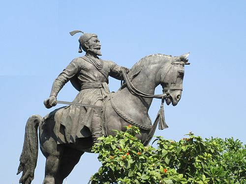
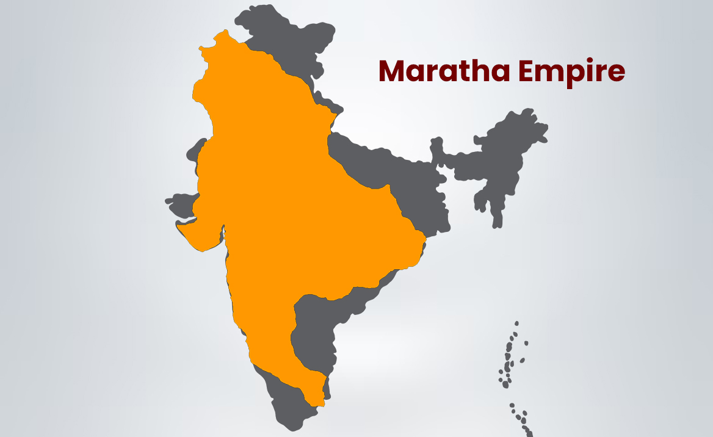
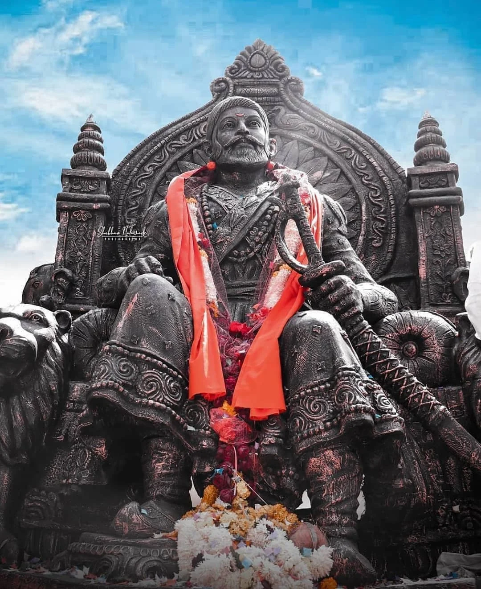

Early life
Born in 1630 at Shivneri Fort, Shivaji Maharaj was raised under the guidance of his mother Jijabai, who instilled in him values of righteousness, devotion, and bravery. From a young age, he was inspired by tales of ancient heroes and the rich cultural traditions of Maharashtra. His childhood shaped his determination to fight injustice and protect the land and its people.

Founding of Maratha Empire
Shivaji Maharaj began his military career at a young age, capturing forts and territories with brilliant strategies. He pioneered guerrilla warfare, using the rugged terrain of the Sahyadri mountains to his advantage. His victories against powerful adversaries like the Mughals and Adilshahi rulers laid the foundation of the Maratha Empire, proving that determination and intelligence could overcome even the strongest foes.
